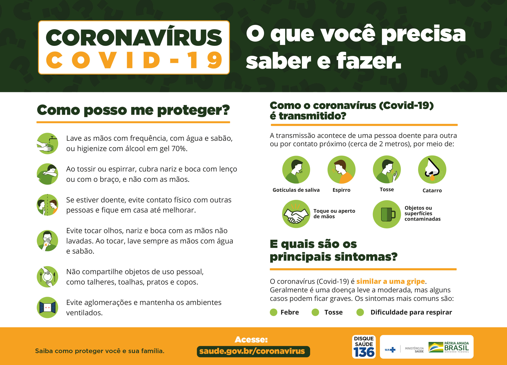

Como se proteger
As recomendações de prevenção à COVID-19 são as seguintes:
Lave com frequência as mãos até a altura dos punhos, com água e sabão, ou então higienize com álcool em gel 70%.
Ao tossir ou espirrar, cubra nariz e boca com lenço ou com o braço, e não com as mãos.
Evite tocar olhos, nariz e boca com as mãos não lavadas.
Ao tocar, lave sempre as mãos como já indicado.
Mantenha uma distância mínima de cerca de 2 metros de qualquer pessoa tossindo ou espirrando.
Evite abraços, beijos e apertos de mãos. Adote um comportamento amigável sem contato físico, mas sempre com um sorriso no rosto.
Higienize com frequência o celular e os brinquedos das crianças.
Não compartilhe objetos de uso pessoal, como talheres, toalhas, pratos e copos.
Mantenha os ambientes limpos e bem ventilados.
Evite circulação desnecessária nas ruas, estádios, teatros, shoppings, shows, cinemas e igrejas. Se puder, fique em casa.
Se estiver doente, evite contato físico com outras pessoas, principalmente idosos e doentes crônicos, e fique em casa até melhorar.
Durma bem e tenha uma alimentação saudável.
Utilize máscaras caseiras ou artesanais feitas de tecido em situações de saída de sua residência.
Caso for viajar
Caso você precise viajar, avalie a real necessidade. Se for inevitável viajar, previna-se e siga as orientações das autoridades de saúde locais. Ao voltar de viagens internacionais ou locais recomenda-se:
No caso de viagens internacionais: o isolamento domiciliar voluntário por 7 dias após o desembarque, mesmo que não tenha apresentado os sintomas.
No caso de viagens locais: ficar atento à sua condição de saúde, principalmente nos primeiros 14 dias.
Reforçar os hábitos de higiene, como lavar as mãos com água e sabão.
Caso apresente sintomas de gripe, siga as orientações do Ministério da Saúde para isolamento domiciliar.
